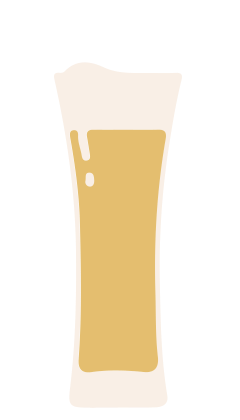

Types of beer
Did you know that there are more than 100 types of beer in the world? Get to know them
Standard American Beer

International Lager

Czech Lager

Pale Malty European Lager
Amber Malty European Lager
Amber Bitter European Beer
Not sure about which one choose?